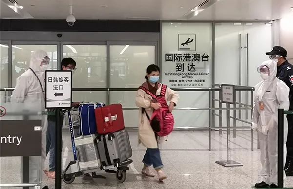
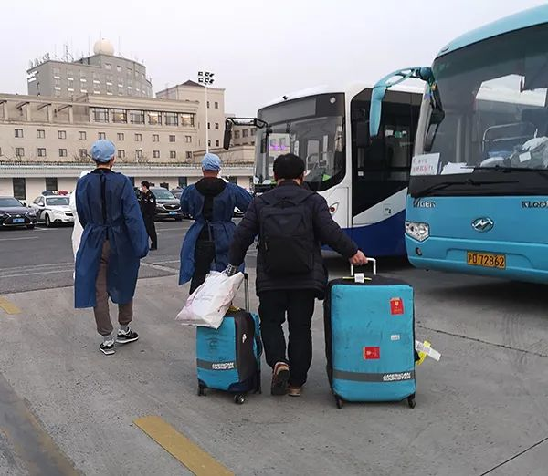
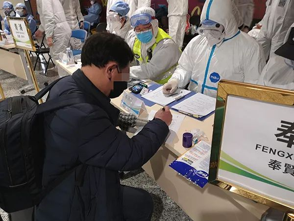

在莫斯科被隔离的80名中国人：有人被判遣返离境，5年内不得再入俄 | 深度聚焦
原文链接 备份链接 记者/ 颜星悦 **编辑/石爱华 宋建华 ** 察里津诺残疾人康复中心大门 受新冠肺炎疫情影响，俄罗斯首都莫斯科近日开始执行严格的防疫措施，并利用人脸识别技术对可能的感染者进行“监控”。 从2月22日开始，莫斯科执法人 …
澎湃新闻见习记者 陈少颖 记者 熊丰
3月7日下午，一架从首尔飞来的航班降落在上海虹桥国际机场。

上海虹桥国际机场人员集散点 本文图片均为 澎湃新闻见习记者 陈少颖 摄
下午5点30分左右，金先生（化名）推着行李车从T1航站楼国际、港澳台到达出口出来。“请出示一下您的护照。”工作人员说道。金先生随即展示了他的护照，封面上贴着一个黄色的圆形标签。“您请往这里走。”工作人员引导金先生从“日韩旅客进口”前往机场划定的专门区域。

人员集散点入口处，工作人员检查旅客证件
在虹桥机场的这个区域里，临时组成了人员集散点，各区民政、公安、检察院等部门抽调人员作为志愿者驻点在此，对入境后需要居家隔离健康观察的人员进行人员分流。
澎湃新闻（www.thepaper.cn）记者在现场看到，旅客的护照上贴有不同颜色的标签。在国际、港澳台到达出口处，工作人员介绍，旅客护照上的标签颜色为绿色，可以直接通行，而若标签为红色、黄色或没有标签，则需至集散点进行进一步的信息登记和人员分流。
出口：集散点人员分流
“您居住在哪里呢？”来到集散点入口处，工作人员向金先生问道。金先生回复：“我住在奉贤。”

在国际、港澳台到达出口处，工作人员会检查旅客护照上的标签颜色。
金先生是韩国人，和工作人员用普通话交流不成问题。他跟随引导，来到奉贤区的登记台前。工作人员开始记录他的护照信息、检查签证记录，同时递上《居家隔离观察承诺书》。金先生摘下毛线手套，接过承诺书，阅读后写下居住地址、航班号、护照号、手机号等信息。
“上一次从上海出境是什么时候？”“有去过重点国家或地区吗？”“家里住几个人，有居家隔离的条件吗？”“有人来机场接您吗？”工作人员向金先生仔细询问，并核查相关信息。
“您有在上海的中国朋友或同事吗？请留一个他的联系方式。”工作人员说，此举是确保能联系到金先生。信息确认无误后，工作人员将金先生的护照放入保鲜袋，交由同事，“到社区以后会把护照还给您。”与此同时，相关信息已同步在工作群中，金先生所在的街镇也行动了起来。
金先生告诉记者，他在上海工作，有固定住处，考虑到韩国疫情日趋严峻，便回去探望自己的老母亲，“我和母亲见面都隔得远远的，把口罩什么的防疫物资给她。”
整个集散点分为18个区域，除了上海市16个区，浙江省、江苏省也各占其一。
3月7日的疫情防控新闻发布会透露，自境外重点地区从上海入境去往其他省市的旅客，在入境检查未见异常的，直接交由当地在机场的工作组人员，经登记信息核实身份后，用大巴集中送回本省指定地点。
记者在浙江省的登记台看到，桌上已准备了中文、韩文和日本三种语言的《致来（返）浙旅客告知书》。一名工作人员介绍，浙江省政府驻沪办和有关部门统一安排车辆，将旅客送至嘉兴市大云超限检测站，而后将由旅客所前往的目的地政府提供车辆接送服务。
此外，上海市政府外事办公室的工作人员也驻点在此，为旅客提供翻译服务。
回家：大巴车或私家车接送，社区联动
在工作人员的引导下，金先生来到了3号门外的停车场，这里停泊着上海各区和其他省市前来接送旅客的大巴车。
护送员王平此时已站在大巴车旁，“请从中门上车，靠后排就座。”他引导金先生放置完行李就座后，与同事进行了简短交流，接过金先生的护照，保管好。他打开工作群，与另一位护送员、驾驶员确认金先生的目的地。
“我们会根据旅客人数和实际情况将他们送到小区门口或区指定地点，和接应的社区工作人员交接完后返回机场。”王平告诉记者，“如果航班、人员比较集中，会稍等一等，不过核载49人的大巴最多坐10位左右的旅客；如果航班比较分散，就会挨个接送。护送途中要保证避免交叉感染。”

金先生在工作人员的引导下乘坐大巴。
奉贤区驻虹桥机场组二组组长赵舜卿介绍，除了《居家隔离观察承诺书》外，登记台还准备了《重点国家入境人员私家车接送登记表》和《重点国家入境人员集中接送登记表》。其中，私家车接送需登记车牌、目的地、接车驾驶员的姓名、证件号和手机号。奉贤区在统一表格的基础上细化了专车集中接送表，包含机场交接时间、跟车人姓名、离开机场时间、到达目的地时间、接收人、填表人等信息，“这样整个过程更加清晰。”
赵舜卿说，他们会把信息实时反馈给区指挥部和街镇，有居家隔离观察条件的旅客则居家隔离，没有的会根据街镇的意见将其护送至集中观察点。到了社区以后，社区工作人员会安排妥当，旅客便可进行隔离观察。
晚上7点15分左右，金先生到达所在小区，社区工作人员已在门口等待。随后，金先生开始了居家隔离观察。

金先生在集散点登记台填写居家隔离观察承诺书
除了大巴车护送旅客外，也有不少家属开私家车来接机。另一边，在金先生到达前，周先生（化名）的家人已驾车在车库等候周先生回家。

工作人员陪同周先生坐上私家车，并收集信息、检查证件
周先生从美国返沪，在日本转机。登记完信息，闵行区登记台的工作人员陪同他前往机场指定的接客区域。家人接到周先生后，填写登记表、出示驾驶证等相关证件。再次确认信息后，工作人员将护照返还给周先生，“您的护照请收好。”
“谢谢配合，慢走。”工作人员目送周先生离开。
本期编辑 常琛
推荐阅读


原文链接 备份链接 记者/ 颜星悦 **编辑/石爱华 宋建华 ** 察里津诺残疾人康复中心大门 受新冠肺炎疫情影响，俄罗斯首都莫斯科近日开始执行严格的防疫措施，并利用人脸识别技术对可能的感染者进行“监控”。 从2月22日开始，莫斯科执法人 …
原文链接 备份链接 图片来源：视觉中国 实习记者：刘世龙 “ 针对返工期间疫情防控问题，北京市疫情防控工作领导小组社区防控组办公室副主任、市委组织部副部长张强宣布，对七类人群给予特殊照顾。 ” 北京一位哺乳期员工居家隔离期间复工，导致公司 …
原文链接 备份链接 返工人员日益增加，社区防控成为重中之重。AI前哨站注意到，苏州、上海、杭州等多个地方的社区用上了“智能封条”，防止居家隔离人员擅自外出。据了解，“智能封条”使用了物联网、5G等技术，可以监测门的开关状态，一旦出现异常开 …
原文链接 备份链接 如今在武汉，有很多家庭需要进行居家隔离。在这漫长的十多天里，他们并非一座孤岛，很多志愿者和社工为他们提供了不少的帮助。 “好多亲友在封城前就劝我们离开，但作为专业社工，我们该留下来做些什么。”陈兰兰是武汉市逸飞社会工作 …
原文链接 备份链接 我可以隔离，你可以给我搭个帐篷，哪怕在地里，在郊外，我不怕冷，但是不要把我跟确诊病例的亲密接触者关在一起。 结束完武汉火神山医院的建设之后，张元与同去的另外三名老乡志愿者接受了身体检查，确认目前无恙后得到了通行证，被允 …